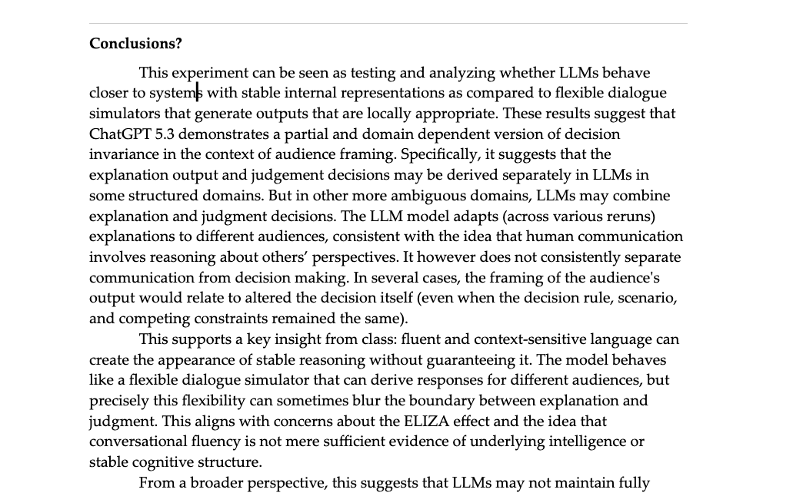
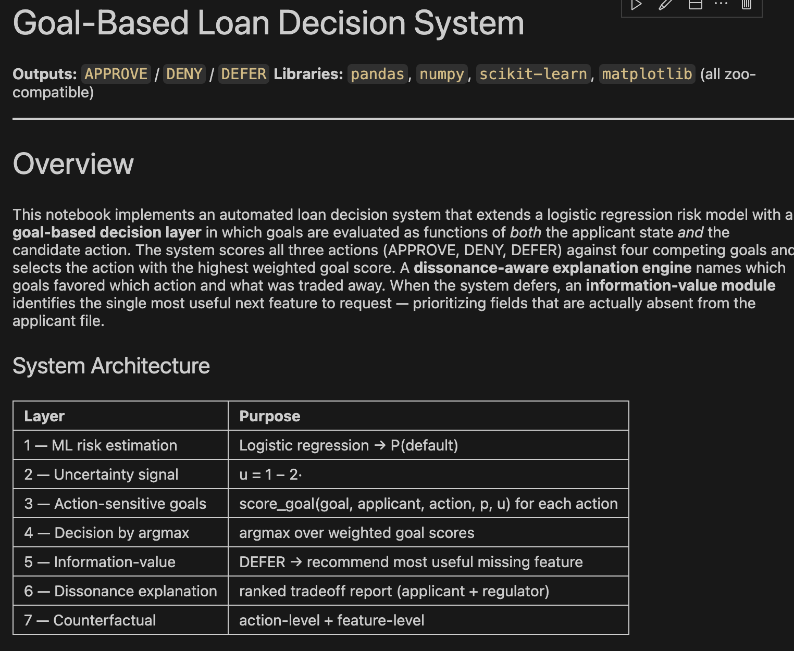

Quantum Laser Synchronization
Python and MATLAB workflows for timing drift detection, signal synchronization, and distributed quantum networking experiments.
An evolving archive
Work in progress, things I have made, and the thinking behind them.
TECH_PROJ
Models, systems, and experiments. Select a project for more detail.
Python and MATLAB workflows for timing drift detection, signal synchronization, and distributed quantum networking experiments.

ETL and Neo4j system integrating geopolitical news, commodity prices, and sovereign debt data to model Venezuela oil-risk signals.

Research and replication code modeling how workforce and societal impact can reshape space-sector capital allocation.

Hybrid quant-analyst recommendation system combining financial scoring, machine learning precedent comparison, and client-specific logic.

Experimental study testing whether large language models maintain stable decisions under audience-framing changes.

An interpretable AI-driven lending system exploring fairness, counterfactuals, and approval decisions.

An interactive TypeScript visualization of neutral-atom quantum networks and atomic interactions.

A bilingual AI literacy book introducing machine learning, ethics, and computational thinking.

Systems architecture, cost-risk modeling, and power-subsystem analysis for a Mars rover concept.

A Python recommendation system aligning user needs, goals, and product constraints.

A simulation-based decision system learning an optimal hit/stand policy through state-value estimation.

Circuit labs analyzing frequency response, attenuation, and loop-gain behavior.

A PCB and comparator-based motor-control system using adjustable PWM duty cycles and IR beam switching.

A built and soldered oscillator-based radio transmission circuit for audio-signal experiments.
WRITING_IDEAS
Longer-form notes on the work: what I noticed, what changed my thinking, and how the pieces fit together.
LEARNING_LAB
Formal coursework, focused programs, and skills I am actively putting to use.
PHOTOS
A place for visual stories, details, and the parts of a place or experience that do not fit into a résumé bullet.
This folder is ready for your first photo series.
When you choose the images and titles, this can become a simple image-led archive without changing the portfolio structure.